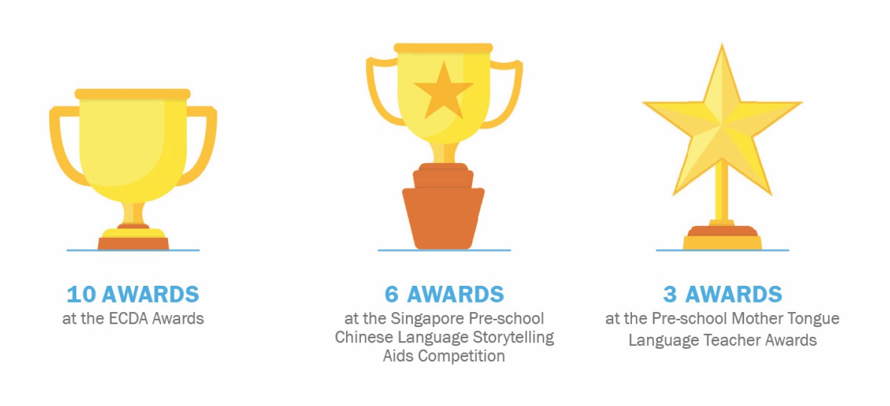
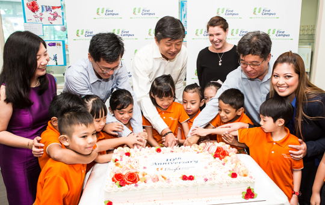
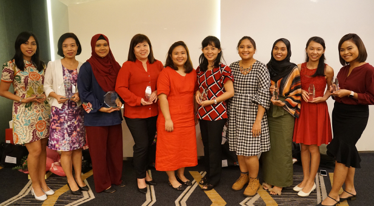
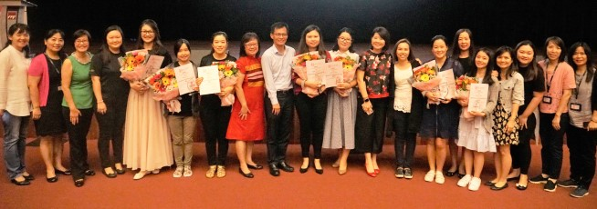
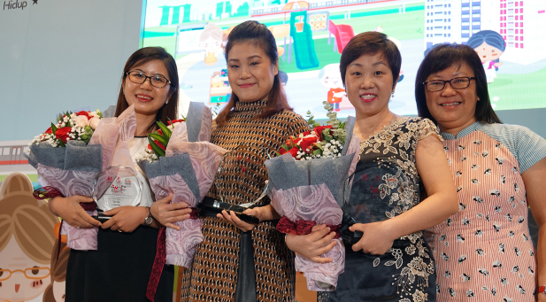

Annual Report 2018
NFC prides itself as a pioneer and change agent that is responsive to industry changes and ready to seize emerging opportunities. By pushing boundaries and venturing into new grounds, we will gain from new exposure and insights to strengthen our position as a leading practice and thought leader in the ECCE sector.
In 2018, NFC staff won a multitude of awards at the national level:
NTUC First Campus and the National Institute of Education, Singapore (NIE) embarked on a 3-year joint research study on NFC’s holistic Child Support Model for pre-school children from low-income families. Comprising of a team of NFC and NIE researchers, the study aims to derive findings that would address issues on inequality and social mobility in Singapore.
This is the first-of-its-kind social research study initiated by a pre-school operator in Singapore, in partnership with Singapore’s national teacher education institute. The three-year study will collect quantitative and qualitative data from selected NFC pre-school cohorts from 2019 to 2021. The research team will also include the children’s parents, teachers, principals and Child Support Professionals as active participants in the study.
The study will evaluate before-and-after outcomes of how these children and their families’ situation have changed through the assistance and support services they receive from the Child Support Model. The research findings will give NFC informed insights to propose new policies or changes to existing ones, as part of its regular advocacy efforts with the government.
Find out more about the unique Child Support Model here.
In 2018, NFC developed EASI Procure, a cloud-based e-procurement software platform that allows pre-school operators to order commonly-used items for their operations from an NFC-curated catalogue of approved vendors. Since EASI Procure went live in June 2018, 96 centres from 14 independent pre-school operators have signed up to use the platform.
NFC is committed to the holistic development of children through exemplary practices in curriculum, pedagogy, and innovation. In 2018, NFC was presented with 10 out of 18 awards at the ECDA Awards. The winners were selected from over 300 nominations from pre-schools all over Singapore. In addition, six MFS pre-schools received the SPARK Commendation certification, out of a total of nine pre-schools nation-wide. Another 11 MFS and two LSH pre-schools also received their SPARK Certification.
Outstanding Early Childhood
Teacher Award
Ms Tay Shu Ling Eunice
Deputy Centre Lead
My First Skool at Blk 803 Tampines
Outstanding Early Childhood Educarer Award
Ms Aishah Bte Sirajuddin
English Teacher
The Caterpillar’s Cove Child Development and Study Centre @ Jurong East
Promising Early Childhood Leader Award
Ms Chew Poh Ching Phyllicia
Principal
My First Skool at 229 Ang Mo Kio
Promising Early Childhood
Teacher Award
Ms Yuannita Tovanna
Lead Teacher
My First Skool at Blk 166 Punggol Central
Promising Early Childhood Educarer Award
Ms Lai Mei Sum
Lead Teacher
My First Skool at Blk 219 Serangoon
Ms Raihana Binte Suhaimi
Lead Teacher
My First Skool at Blk 312C Sumang Link
Ms Nur Erdina Bte Rahmat
English Teacher
The Little Skool-House At-Kent-Vale
Early Childhood Innovation Award (Commendation)
My First Skool at Blk 18A Holland Drive
Project: Project Social Good Made Easy
My First Skool at Blk 212 Choa Chu Kang
Project: How can we ease the primary school transition for K2 children?
My First Skool at Blk 518 Jurong West
Project: How can we facilitate purposeful play for children at the Dramatic Learning Centre?
NTUC First Campus’ My First Skool’s Chinese Language teachers clinched four out of a total of six awards at the Singapore Pre-school Chinese Language Storytelling Aids Competition 2018.The awards recognise pre-school teachers that use creative teaching aids to teach the Chinese Language. The competition participants were judged based on how they used the teaching aids to tell stories creatively and effectively to their pre-schoolers.
Organised by the Committee to Promote Chinese Language Learning (CPCLL), the competition was one of the highlights of the Seminar for Pre-school Chinese Language Teachers 2018, an event supported by the Early Childhood Development Agency (ECDA).
Runner-up Award
作品:《小蝌蚪找妈妈》
教师姓名: 倪学静
中心: My First Skool at 51 Fernvale Link
2nd Runner-up Award
作品:《狮子拔牙》
教师姓名: 于佳丽、马晗笑、柯望
中心: My First Skool at Sembawang Shopping Centre
Commendation Award
作品: 《小兔乖乖》
教师姓名: 陈韵晴、田文娟
中心: My First Skool at Blk 676 Woodlands Drive 71
Commendation Award
作品:《蚂蚁与西瓜》
教师姓名: 许育宁
中心: My First Skool at Blk 571 Ang Mo Kio Avenue 3
Three NFC Chinese Language teachers won honours at the Pre-school Mother Tongue Language Teacher Awards 2018.
The awards presentation was part of the Mother Tongue Languages Symposium 2018, which was co-organised by MOE and the various committees to promote the Mother Tongue languages.
Outstanding Award
Li Fengjuan 李奉娟
My First Skool at Blk 507A Wellington Circle
Liu Ying 刘瑛
My First Skool at Blk 111 Mcnair Road
Merit Award
Liu Yan 刘艳
My First Skool at Blk 235
Bukit Panjang Ring Road